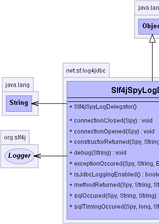
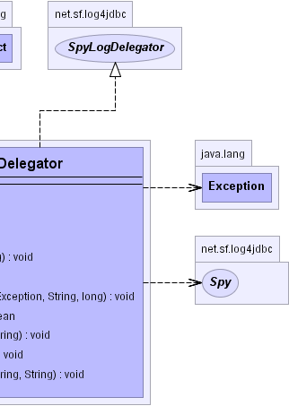

net.sf.log4jdbc.Slf4jSpyLogDelegator
net.sf.log4jdbc.Slf4jSpyLogDelegator
|
log4jdbc3 1.2beta2 | |||||||||
| PREV CLASS NEXT CLASS | FRAMES NO FRAMES | |||||||||
| SUMMARY: NESTED | FIELD | CONSTR | METHOD | DETAIL: FIELD | CONSTR | METHOD | |||||||||
java.lang.Object
Delegates JDBC spy logging events to the the Simple Logging Facade for Java (slf4j).
|  |  |
| Constructor Summary | |
Slf4jSpyLogDelegator()
Create a SpyLogDelegator specific to the Simple Logging Facade for Java (slf4j). |
|
| Method Summary | |
void |
connectionClosed(Spy spy)
Called whenever a connection spy is closed. |
void |
connectionOpened(Spy spy)
Called whenever a new connection spy is created. |
void |
constructorReturned(Spy spy,
String constructionInfo)
Called when a spied upon object is constructed. |
void |
debug(String msg)
Log a Setup and/or administrative log message for log4jdbc. |
void |
exceptionOccured(Spy spy,
String methodCall,
Exception e,
String sql,
long execTime)
Called when a jdbc method throws an Exception. |
boolean |
isJdbcLoggingEnabled()
Determine if any of the 5 log4jdbc spy loggers are turned on (jdbc.audit | jdbc.resultset | jdbc.sqlonly | jdbc.sqltiming | jdbc.connection) |
void |
methodReturned(Spy spy,
String methodCall,
String returnMsg)
Called when a JDBC method from a Connection, Statement, PreparedStatement, CallableStatement or ResultSet returns. |
void |
sqlOccured(Spy spy,
String methodCall,
String sql)
Special call that is called only for JDBC method calls that contain SQL. |
void |
sqlTimingOccured(Spy spy,
long execTime,
String methodCall,
String sql)
Special call that is called only for JDBC method calls that contain SQL. |
| Methods inherited from class java.lang.Object |
clone, equals, finalize, getClass, hashCode, notify, notifyAll, toString, wait, wait, wait |
| Constructor Detail |
public Slf4jSpyLogDelegator()
| Method Detail |
public boolean isJdbcLoggingEnabled()
isJdbcLoggingEnabled in interface SpyLogDelegator
public void exceptionOccured(Spy spy,
String methodCall,
Exception e,
String sql,
long execTime)
exceptionOccured in interface SpyLogDelegatorspy - the Spy wrapping the class that threw an Exception.methodCall - a description of the name and call parameters of the method generated the Exception.e - the Exception that was thrown.sql - optional sql that occured just before the exception occured.execTime - optional amount of time that passed before an exception was thrown when sql was being executed.
caller should pass -1 if not used
public void methodReturned(Spy spy,
String methodCall,
String returnMsg)
methodReturned in interface SpyLogDelegatorspy - the Spy wrapping the class that called the method that
returned.methodCall - a description of the name and call parameters of the
method that returned.returnMsg - return value converted to a String for integral types, or
String representation for Object. Return types this will
be null for void return types.
public void constructorReturned(Spy spy,
String constructionInfo)
constructorReturned in interface SpyLogDelegatorspy - the Spy wrapping the class that called the method that returned.constructionInfo - information about the object construction
public void sqlOccured(Spy spy,
String methodCall,
String sql)
sqlOccured in interface SpyLogDelegatorspy - the Spy wrapping the class where the SQL occured.methodCall - a description of the name and call parameters of the method that generated the SQL.sql - sql that occured.
public void sqlTimingOccured(Spy spy,
long execTime,
String methodCall,
String sql)
sqlTimingOccured in interface SpyLogDelegatorspy - the Spy wrapping the class where the SQL occurred.execTime - how long it took the SQL to run, in milliseconds.methodCall - a description of the name and call parameters of the
method that generated the SQL.sql - SQL that occurred.public void debug(String msg)
debug in interface SpyLogDelegatormsg - message to log.public void connectionOpened(Spy spy)
connectionOpened in interface SpyLogDelegatorspy - ConnectionSpy that was created.public void connectionClosed(Spy spy)
connectionClosed in interface SpyLogDelegatorspy - ConnectionSpy that was closed.
|
log4jdbc3 1.2beta2 | |||||||||
| PREV CLASS NEXT CLASS | FRAMES NO FRAMES | |||||||||
| SUMMARY: NESTED | FIELD | CONSTR | METHOD | DETAIL: FIELD | CONSTR | METHOD | |||||||||